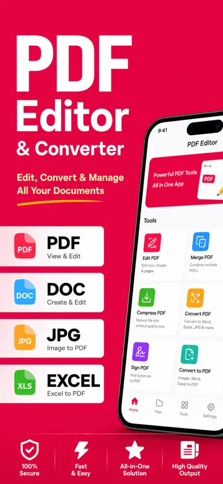
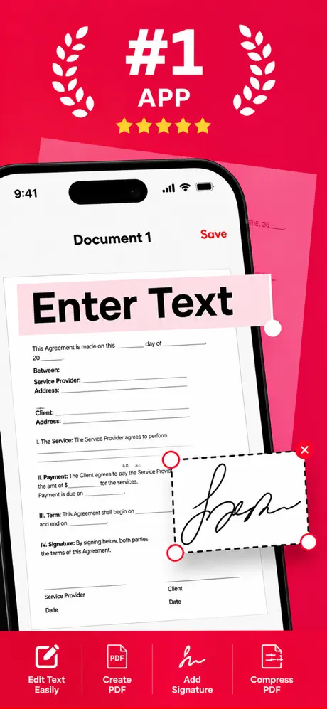
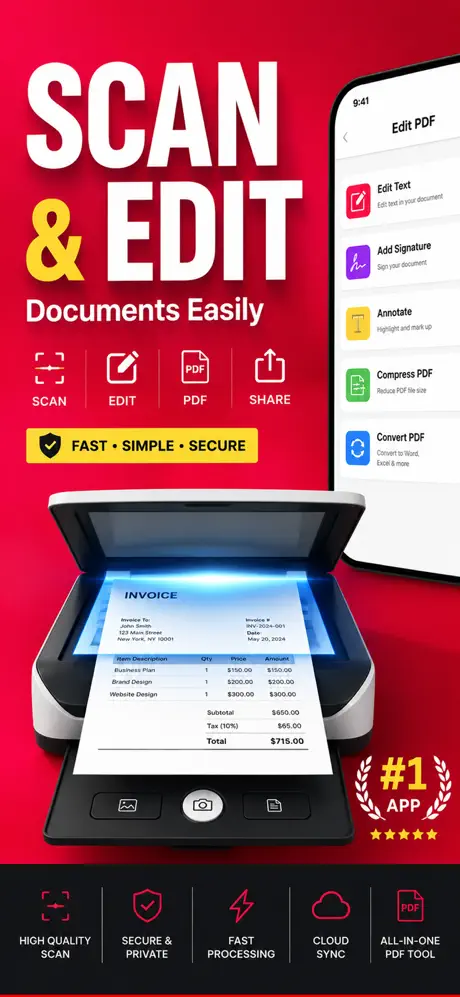
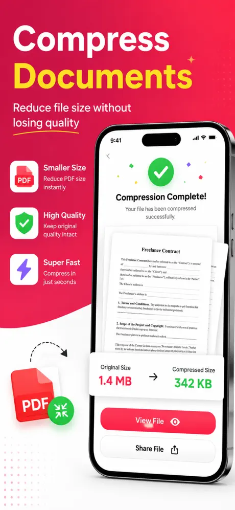
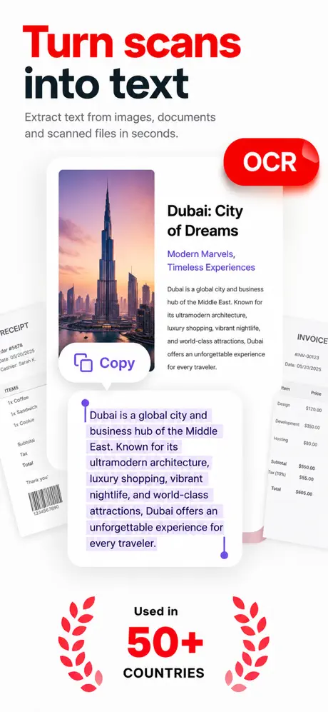

PDF & Documents
How to Convert Photos to PDF on iPhone
Combine one or more photos into a PDF on iPhone for free using the Files app or the Print menu, and how to merge, compress or sign the result.
Reviewed
Convert, merge, split, compress and sign PDFs.
A PDF toolkit for iPhone: convert images and RTF to PDF and back, merge and split files, compress, annotate, add eSignatures and password-protect documents.





Screenshots from the official App Store listing.
Photo to PDF (called PDF Converter Pro inside the app) handles day-to-day PDF chores on iPhone. Scan with the camera, or convert JPG, PNG, HEIC and RTF files into PDFs.
You can merge several files, split a PDF, reorder, rotate or extract pages, and compress large files. Annotation tools let you highlight, comment, type text anywhere on a page and add watermarks.
For signing and security, it adds eSignatures, password-protects sensitive PDFs, and removes passwords from files you own.
Inside the app and in parts of its listing, it is called PDF Converter Pro.
Scan with the camera, or convert RTF, JPG, PNG and HEIC to PDF, and PDF back to RTF, JPG or PNG.
Combine files into one PDF or split a PDF into separate documents.
Reorder, rotate or extract specific pages.
Reduce the size of large PDFs.
Comments, highlights, notes, free text on any page, and watermarks.
Add eSignatures, password-protect PDFs, and unlock files you own.
Features as described on the App Store listing. Some require an in-app purchase.
PDF Scanner Pro focuses on camera scanning, OCR and organizing scans. Photo to PDF focuses on converting and manipulating existing files: merge, split, compress, convert back to images or RTF, and password protection.
PDF & Documents
Combine one or more photos into a PDF on iPhone for free using the Files app or the Print menu, and how to merge, compress or sign the result.
Reviewed
PDF & Documents
Scan paper documents to PDF with your iPhone camera using the Notes or Files app, plus tips for sharp, readable scans and when a scanner app helps.
Reviewed
PDF & Documents
Scan, OCR, sign and organize documents.
Productivity & Business · PDF & Documents
Professional invoices and estimates from your iPhone.